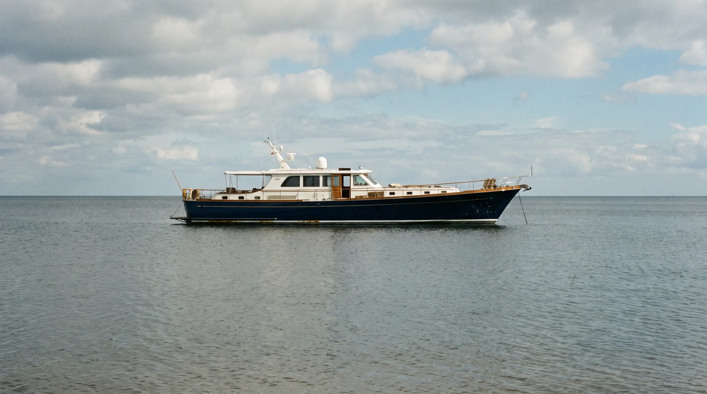
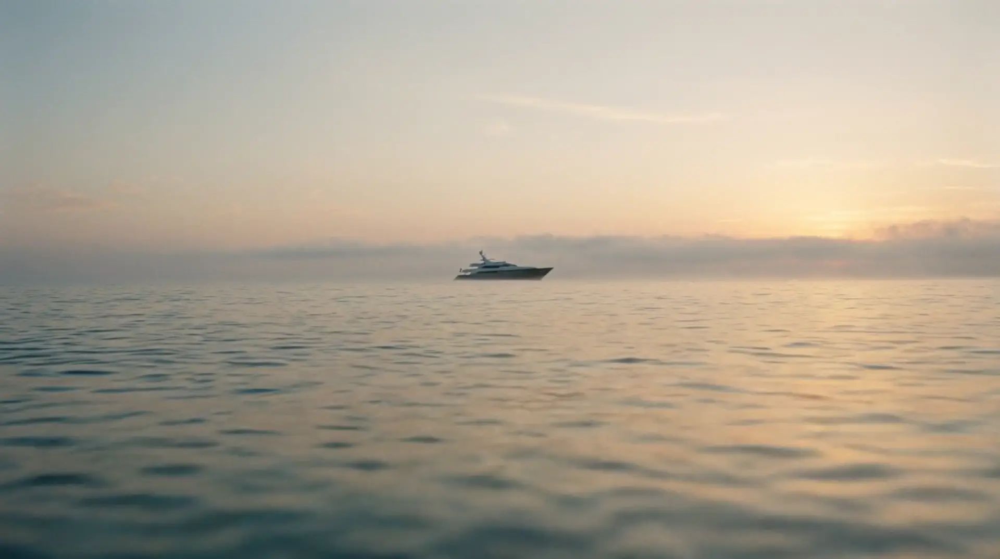
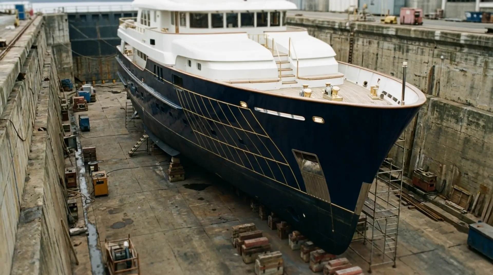
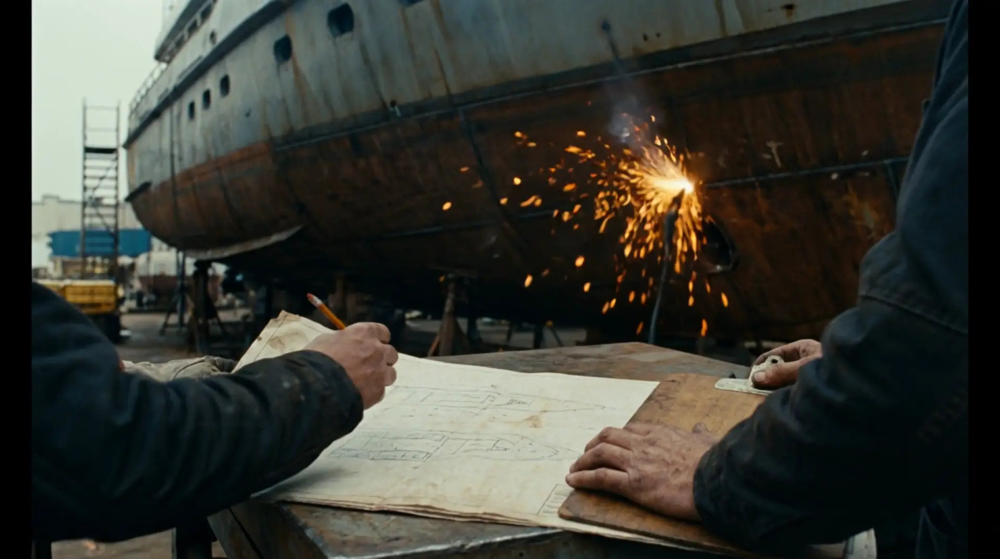
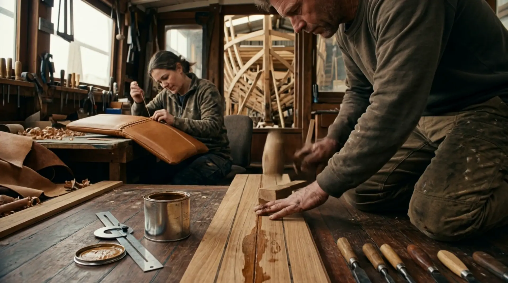
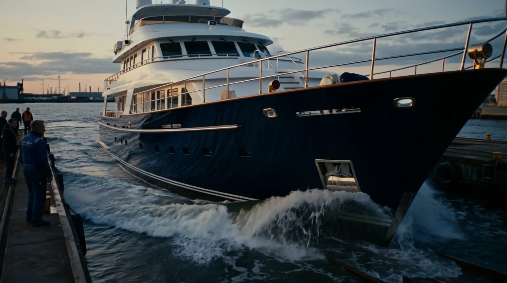
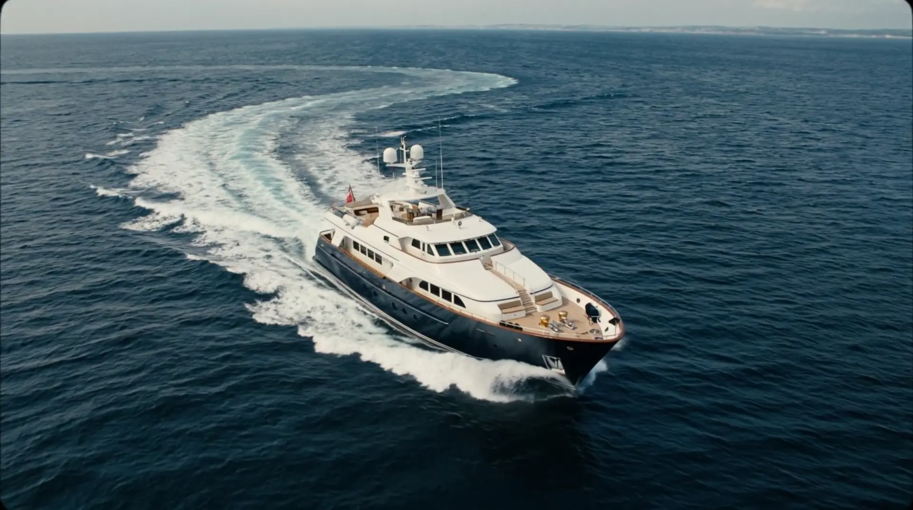
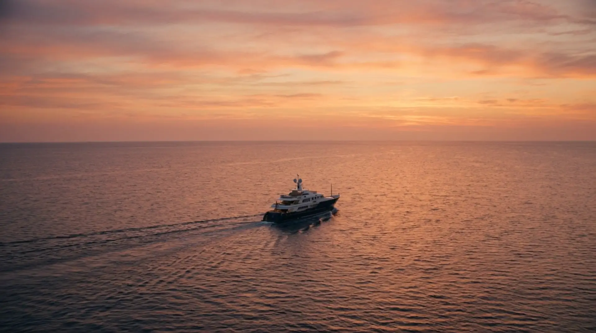
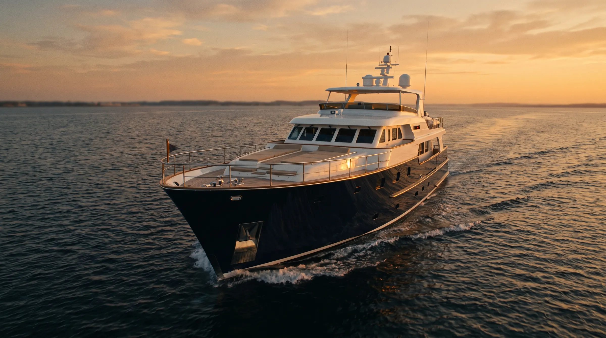
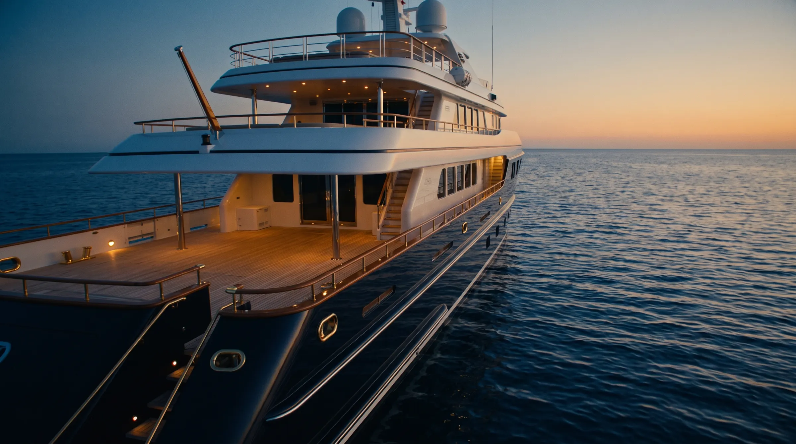

Orione.
Chantier naval. Yachts sur mesure,de 18 à 60 mètres.
Tout commencepar une coque.
Trente milleheures de main.
Le teck,le cuir,le laiton.Rien d'autre.
Le jour dela mise à l'eau.
Elle n'appartientqu'à vous.
Manifeste
Un yacht Orione ne sort d'aucun catalogue. Il naît d'une conversation, d'un dessin à la main, puis d'une coque montée membrure après membrure dans notre atelier de Méditerranée. Nous ne construisons qu'une dizaine de yachts par an, pour que chacun reçoive le temps qu'il demande. Le teck se choisit à l'œil, le cuir se coud à la main, le laiton se polit jusqu'à répondre à la lumière. Le reste n'a pas sa place à bord.
Chiffres
- d'expérience
- 35ans
- yachts livrés
- 112
- heures de construction en moyenne
- 30 000h
Modèles


Rendez-vous privé
Parlons de
votre yacht.